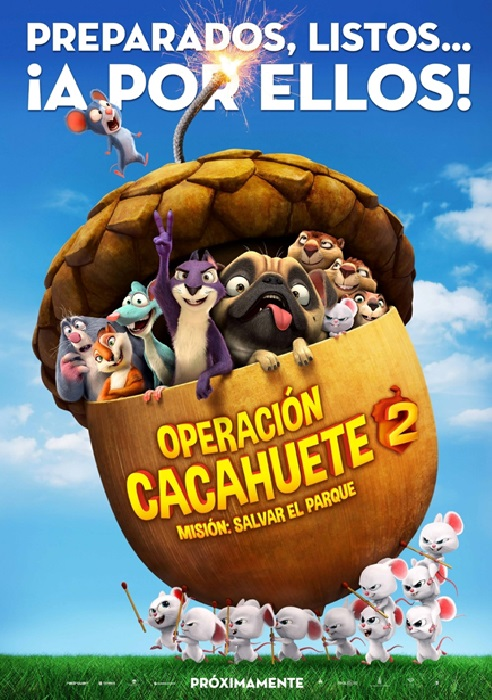

Título original
The Nut Job 2: Nutty by Nature
Género
Animación, Aventuras, Comedia
Duración
91 min
País
Canadá, USA, Corea del Sur
Director
Cal Brunker
Guión
Bob Barlen, Cal Brunker, Scott Bindley
Reparto
Will Arnett, Katherine Heigl, Maya Rudolph, Jackie Chan, Sebastian Maniscalco, Isabela Moner, Peter Stormare, Bobby Cannavale, Bobby Moynihan, Kari Wahlgren, Gabriel Iglesias, Jeff Dunham, Rob Tinkler
Sinopsis
¡Vuelven Surly y su banda! Una vez más, desde Oakton, donde el malvado alcalde ha decidido demoler Liberty Park para construir un peligroso parque de atracciones. Surly y sus pintorescos amigos se unen para defender su hogar, derrotar al alcalde y salvar el parque.